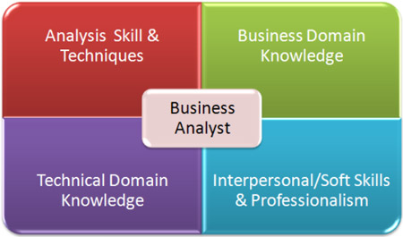

Бизнес-аналитик
Бизнес-аналитик (Business Analyst) — специалист, задачей которого является детальное изучение структуры компании, выявление проблем и поиск путей их успешного разрешения. Например, функции бизнес-аналитика могут включать финансовый анализ деятельности организации, автоматизацию хозяйственной деятельности или разработку новой, более эффективной бизнес-модели, которая включает в себя оптимизацию процессов и работы персонала, снижение издержек, увеличение прибыли и т.п.
Профессия бизнес-аналитика высокооплачиваема, престижна и перспективна. Подобные специалисты востребованы на крупных предприятиях различных отраслей — в основном, в банковском секторе, в строительстве, торговле и добывающей промышленности, а также в ИТ-компаниях и сфере консалтинга.
Аналитик может иметь хороший английский, подвешенный язык и писать идеальную документацию. Но если он не разбирается в предметной области, не может понять заказчика и донести это до разработчика, то его проекты будут проваливаться
Претендовать на должность бизнес-аналитика (Business Analyst) могут выпускники экономических, финансовых, технических или математических факультетов, владеющие теоретическими знаниями в области анализа и моделирования бизнес-процессов. Также может потребоваться знание информационных систем, бухгалтерского, финансового и управленческого учета.
- сбор, формализация и согласование требований с заказчиками;
- сбор информации, описание и моделирование бизнес-процессов;
- анализ эффективности и выработка предложений по оптимизации процессов;
- разработка документации;
- подготовка сравнительного анализа деятельности компании;
- подготовка презентаций для руководства и заказчиков.
В обязанности Бизнес-аналитика входит:
Главное преимущество профессии бизнес-аналитика — возможность проникать в суть: разбираться, что как устроено, из каких частей состоит, как они между собой связаны и взаимодействуют, и затем описывать сложные вещи с помощью простых, но полезных моделей.
Среди недостатков выделяют сложности в общении с заказчиком, когда не удается донести хорошие идеи или же мешают ограничения в сроках и бюджете. Так же необходимость изучать большие объемы информации в краткие сроки. Кроме изучения непосредственно своего проекта, бизнес-аналитик обязан постоянно держать руку на пульсе новых методологий, подходов, изучать базовые принципы новых платформ.
Круг задач можно описать простыми словами: работа с требованиями. Это предполагает как взаимодействие с заинтересованными лицами на стороне заказчика, так и с членами команды, которые отвечают за процесс разработки решения
- высшее образование (предпочтительно в сфере финансов, экономики, бухгалтерии);
- опыт работы с CRM, системами аналитической обработки данных или банковскими информационными системами;
- опыт работы в бизнес-аналитике;
- опыт разработки регламентирующей документации;
- знание ПК;
- аналитическое мышление и умение систематизировать информацию;
- грамотная устная и письменная речь.
Наиболее частые требования к бизнес-аналитику
Большинству организаций, желающих оставаться максимально эффективными и конкурентоспособными, идут на пользу изменения. Бизнес-аналитики играют ключевую роль в этом процессе: они определяют области, где изменения принесут пользу, и оценивают их потенциальное воздействие. Они также помогают планировать эффективные стратегии изменений и способствуют их успешной реализации и измерению.